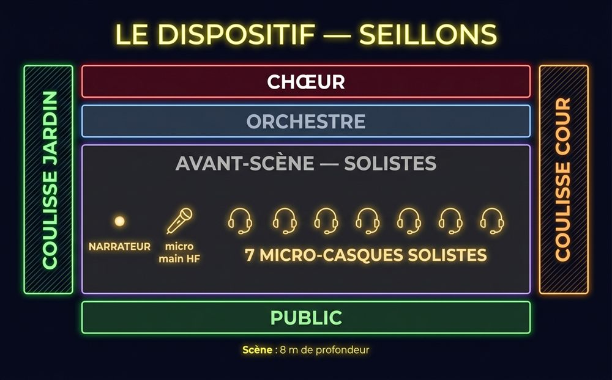

LE PRINCIPE EN 30 SECONDES. Carmen racontée par un narrateur (8 interventions parlées, toujours collées à la musique) et jouée par 7 solistes équipés de MICRO-CASQUES (7 micro-casques), qui évoluent DEVANT l'orchestre, en front de scène. Le chœur est au fond. Les solistes entrent et sortent par les coulisses, à cour et à jardin — et certains trajets sont prévus dans le public si l'accès existe (à décider ensemble aux balances).

Le code des schémas de toute la conduite : flèche pleine = entrée · pointillés = sortie · une couleur par personnage
1 · Les voix à sonoriser
| Qui | Voix | Présence | À savoir |
|---|---|---|---|
| Narrateur — Jean-Christophe Maurice | PARLÉ | 8 interventions, du début à l'acte 3 | Micro main sans fil (à confirmer) · ⚡ il enchaîne souvent immédiatement après le dernier accord (ou après les applaudissements) : niveau toujours prêt |
| Carmen — Marie Pons | Mezzo | Tous les actes | Bouge beaucoup (Habanera, danse, fuite) — quelques répliques parlées |
| Don José — Valentin Ferrari | Ténor | Tous les actes | Descente possible dans le public au N°8 (si accès) — duel très mobile au N°23 |
| Micaëla — Cécilia Arbel | Soprano | Actes 1 et 3 | Air seule en scène au N°22, puis cachée côté cour jusqu'au N°24 |
| Escamillo — Mickaël Guedj | Baryton | Actes 2, 3, 4 | Très mobile (entrée acclamée, duel) · ⚠️ N°24 : chante DEPUIS LES COULISSES côté jardin (micro dédié ou HF ?) |
| Moralès / Zuniga — Jean-Luc Degueurce | Basse | Actes 1 et 2 seulement | Un seul costume pour les deux rôles — son rôle se termine à la fin de l'acte 2 |
| Frasquita — Maud Guillossou Petit | Soprano | Actes 2 et 3 (+ fête acte 4) | Danse à la Chanson bohème |
| Mercédès — Agnès Derome | Mezzo | Actes 2 et 3 (+ fête acte 4) | Danse à la Chanson bohème |
| Chœurs + enfants | — | Le chœur d'enfants chante au N°3 | Chœur au fond du plateau ; le Dancaïre est chanté par les ténors du chœur |
2 · Le déroulé — qui est en scène, ce qui bouge
| Moment | Qui | Mouvements & points son |
|---|---|---|
| Prélude | Orchestre seul | Personne en scène |
| N°1 Scène et chœur | Moralès | Il traverse TOUT le plateau, prend le public à témoin — FREEZE sur l'accord final |
| N°3 Garde montante | Enfants + chœur | Les enfants devant le chœur, rien à jouer |
| N°4 Les cigarières | Chœurs | — |
| N°5 Entrée de Carmen + Habanera | Carmen, José | Carmen surgit côté jardin puis joue AU MILIEU avec José — elle se déplace pendant tout l'air |
| N°6 La rose | Carmen, José | Jet de la rose sur l'accord sec — puis FUITE de Carmen (public si accès, sinon coulisses) |
| N°6bis-7 Micaëla + duo | José, Micaëla | ⚠️ Répliques PARLÉES de José avant l'arrivée de Micaëla (« Cette fleur-là m'a fait l'effet d'une balle ») |
| N°8 L'arrestation | Carmen, José, Zuniga | José va chercher Carmen (public si accès) et la ramène de force — elle se débat |
| 🎙 Narration 1 | Narrateur | « Carmen doit être conduite en prison » — pendant la fin du N°8 |
| N°10 Séguedille | Carmen, José, Zuniga | Duo au milieu · applaudissements ATTENDUS à la fin — PENDANT : Zuniga revient, Carmen s'enfuit |
| 🎙 Narration 2 (double) | Narrateur | « Subjugué… Deux mois plus tard » — l'action (attachage + sortie) se joue DESSUS, rapide |
| 🎼 Orchestre seul | — | Scène vide (transition acte 2) |
| N°12 Chanson bohème | Carmen, Frasquita, Mercédès (+ Zuniga fin) | Les trois DANSENT (éventails) — la danse monte jusqu'au tourbillon |
| 🎙 Narration 3 | Narrateur | « On acclame Escamillo » — cris du chœur juste après |
| N°14 L'air du Toréador | Escamillo + tous | Escamillo entre acclamé, BOUGE de femme en femme, MONTE SUR UNE CHAISE — tableau final tous au centre |
| 🎙 Narration 4 | Narrateur | « Don José sort de prison » — pendant : tous sortent sauf Carmen (la chaise au centre) |
| N°17 Duo + air de la Fleur | Carmen, José | Danse de Carmen autour de la chaise · clairons · l'AIR DE LA FLEUR = moment intime, applaudissements attendus (les chanteurs restent immobiles) · puis la dispute (« la montagne ») |
| 🎙 Narration 5 | Narrateur | « Survient le capitaine Zuniga » — IMMÉDIAT après la musique, l'action navaja se joue dessus |
| N°18 Final de l'acte 2 | Carmen, José, Zuniga, Frasquita, Mercédès | José marche Zuniga à la pointe de la navaja (sortie jardin) · revient en chemise · cape noire · SORTIE DE TOUS EN RIANT (public si accès) |
| 🍷 ENTRACTE | — | Le vrai, avec pause |
| 🎼 Orchestre (acte 3) | — | Scène vide |
| N°19 Les contrebandiers | Carmen, José, Frasquita, Mercédès + chœur | Entrées furtives des DEUX côtés — freezes brusques sur les accents (tout le monde se fige) |
| 🎙 Narration 6 | Narrateur | « Les contrebandiers s'éloignent » — le refus (la main devant) se joue dessus |
| N°20 Trio des cartes | Carmen, Frasquita, Mercédès | Carmen seule au milieu — les deux autres à cour |
| 🎙 Narration 7 | Narrateur | « Le jour se lève » — les trois sortent pendant · Micaëla ENTRE sur son nom |
| N°22 Air de Micaëla | Micaëla | Seule en scène — à la fin elle se cache côté cour |
| 🎙 Narration 8 | Narrateur | « Don José tire… le chapeau » — ⚠️ PAS de vrai coup de feu |
| N°23 Le duel | Escamillo, José (puis Carmen, les filles) | ⚠️ POINT SON N°1 : deux chanteurs TRÈS MOBILES (passes de corrida, ils échangent les côtés) — puis « Holà ! » de Carmen |
| N°24 Final de l'acte 3 | Micaëla, José, Carmen + filles | ⚠️ POINT SON N°2 : la reprise du Toréador se chante DEPUIS LES COULISSES côté jardin (Escamillo hors scène) — micro dédié ou HF ? |
| 🎼 Orchestre (acte 4) | — | Scène vide |
| N°25 Chœur | Chœurs | — |
| N°26 La fête | Escamillo, Carmen + filles + chœur | Le couple entre à jardin bras dessus bras dessous et SE BALADE — duo « Si tu m'aimes » au milieu — Escamillo part aux arènes |
| N°27 Le final | Carmen, José | Les deux seuls, montée dramatique — la fin se joue au corps à corps (étranglement) · dernière phrase de José · puis LES SALUTS |
3 · Les musiques — enregistrement du concert (Carry-le-Rouet)
🎧 Tout le spectacle, morceau par morceau — pour préparer les niveaux et repérer les enchaînements. Les pistes vertes 🎙 sont les narrations parlées. Un seul lecteur joue à la fois.
🎭 LA CONDUITE COMPLÈTE DES ARTISTES → ici — carte par carte, avec les entrées/sorties de chacun et les mêmes musiques.
4 · Les 5 points d'attention son
- 1 Le narrateur enchaîne à la seconde — souvent pile après le dernier accord ou les applaudissements : son micro doit être ouvert en permanence ou anticipé.
- 2 Le duel du N°23 : Escamillo et José traversent et échangent les côtés plusieurs fois — mobilité maximale du spectacle.
- 3 La voix « au loin » du N°24 : Escamillo chante depuis les coulisses côté jardin — l'effet de distance est voulu.
- 4 Des répliques PARLÉES ponctuent le spectacle (José au N°6bis, « Mettez-vous là, Don José » au N°17, le dialogue du duel…) — elles doivent passer comme le chant.
- 5 Les applaudissements font partie du jeu (fin de la Séguedille, après l'air de la Fleur) : les narrations et les actions repartent juste derrière — ne pas « fermer » trop vite.
5 · Lumières — des idées, pas des consignes
La conduite lumière appartient entièrement à l'équipe technique — ce qui suit n'est qu'une palette d'ambiances suggérée par la mise en scène, à adapter ou ignorer librement :
- Acte 1 — une place au soleil (chaleur, plein jour)
- Acte 2 — la taverne (chaleureux, festif)
- Acte 3 — la montagne, LA NUIT (froid, danger — les contrebandiers entrent en catimini et se figent aux bruits)
- Acte 4 — la fête éclatante… puis resserrement dramatique sur le duo final (les deux seuls)
- Les 8 narrations — le narrateur parle en front de scène, souvent pendant que l'action continue derrière lui
6 · Pratique
Planning : 18h00–18h45 installation plateau · 18h45–19h00 musiciens · 19h00–20h00 balances tutti · 20h00–20h45 repas (offert par la municipalité) · 21h00 précises : concert
Scène : profondeur 8 m · chœur au fond · orchestre au milieu · solistes + narrateur en front de scène · 7 micro-casques pour les solistes + 1 micro main sans fil pour le narrateur (à confirmer)
SOS dépannage : 06 71 02 09 08
La conduite scénique complète (carte par carte, avec les musiques) : page principale
Scène : profondeur 8 m · chœur au fond · orchestre au milieu · solistes + narrateur en front de scène · 7 micro-casques pour les solistes + 1 micro main sans fil pour le narrateur (à confirmer)
SOS dépannage : 06 71 02 09 08
La conduite scénique complète (carte par carte, avec les musiques) : page principale